Lab prático · Agentic workflow
Lab 3 — Classificar documentos e extrair dados com um Agentic Workflow
Crie um agente que recebe um PDF no chat, identifica se é um contrato ou uma fatura e extrai os campos principais de cada um, usando um agentic workflow com classificador e extratores de documentos.
Visão geral
Ao final deste lab, cada aluno terá um agente no watsonx Orchestrate que recebe um PDF no chat, identifica se é um contrato ou uma fatura e devolve os campos principais de cada um. Duração estimada: 45 a 60 minutos, tudo pela interface gráfica. Nível: intermediário.
Cenário: uma empresa de serviços financeiros recebe toda semana dezenas de contratos e faturas. Hoje alguém abre cada arquivo e copia à mão as partes do contrato, os dados da fatura e o endereço de cobrança. O agente deste lab faz essa triagem e a extração na própria conversa.
A ideia central: o agente não processa o documento sozinho. Ele chama uma ferramenta do tipo Agentic workflow, um fluxo low-code que pede o arquivo ao usuário, classifica, escolhe o caminho e extrai os dados.
O workflow não tem input: o arquivo chega pela conversa. A saída é o tipo do documento (Class_name).
| Componente | O que faz |
|---|---|
| Document processing agent | Agente que conversa com o usuário e chama o workflow |
| User activity · File upload | Pede o arquivo ao usuário durante o chat |
| Document classifier | Decide se o arquivo é Contract ou Invoice |
| Branch · Document type | Envia o fluxo para o extrator certo |
| Invoice extractor | Extrator Structured com o schema predefinido Invoice (invoice_id, invoice_date, cliente, endereço de cobrança, fornecedor) |
| Contract extractor | Extrator Unstructured com campos criados à mão: Buyer, Supplier e, opcionalmente, Effective date |
| User activity · Message | Mostra ao usuário os campos extraídos |
| End | Devolve o tipo do documento (Class_name) como saída do workflow |
Pré-requisitos
- Acesso ao watsonx Orchestrate (SaaS), com permissão para criar agentes (a conta trial serve).
- Os arquivos de teste, todos fictícios. Baixe e salve no seu computador:
Resultados esperados com os arquivos de teste
| Arquivo | Classe esperada | Campos e valores esperados |
|---|---|---|
| Contract.pdf | Contract | Buyer: Alfa Comércio S.A. · Supplier: Beta Serviços Ltda. · Effective date: March 1, 2026 |
| Invoice.pdf | Invoice | Invoice id: INV-1042 · Invoice date: April 30, 2026 · Customer (Bill to): Alfa Comércio S.A. · Vendor: Beta Serviços Ltda. |
O lab também cita um terceiro arquivo,
Invoice_2.pdf(fatura de outro fornecedor e layout), usado só no teste final. Ele é opcional e entregue pelo instrutor.
Parte 1 — Criar o agente
Passo 1 — Iniciar a criação do agente
Na página inicial do watsonx Orchestrate, clique em Create agent, no canto superior direito.
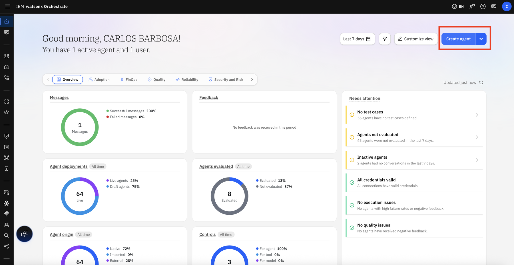
Passo 2 — Criar do zero
Na janela Create an agent, em Other ways to start, clique em Create from scratch.
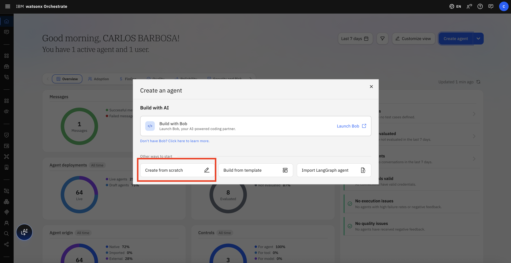
Passo 3 — Nome e descrição do agente
O agente abre na aba Behavior. Em Profile, preencha:
- Agent name:
Document processing agent - Description: cole o texto abaixo.
This agent is able to classify documents and extract core fields to retrieve
Mantenha o modelo padrão (na captura, GPT-OSS 120B — OpenAI (via Groq)). O painel Draft Preview, à direita, será usado no teste final.
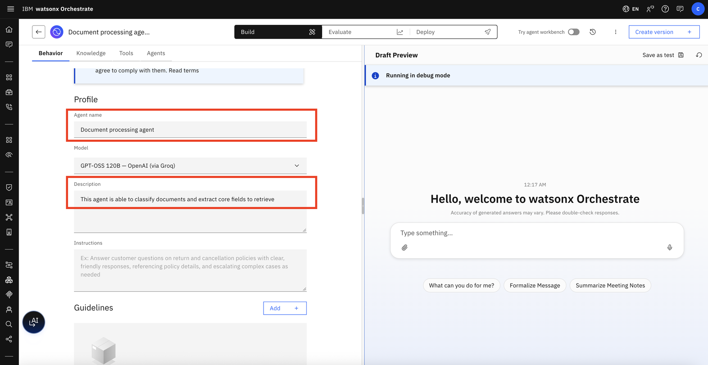
Parte 2 — Criar o agentic workflow
Passo 4 — Adicionar uma ferramenta
Clique na aba Tools e depois em Add Tool +.
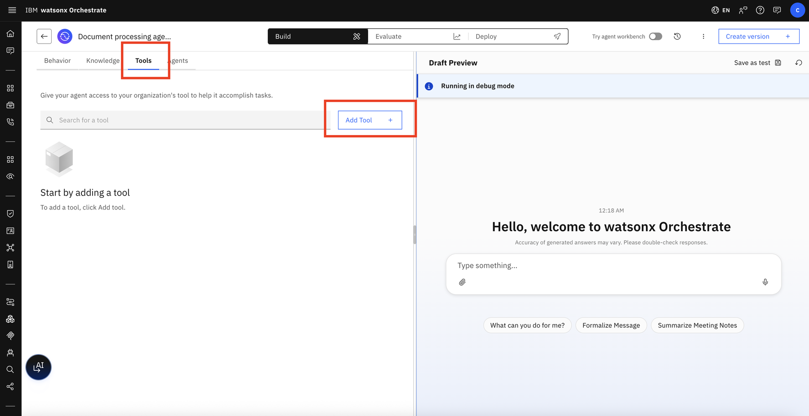
Passo 5 — Escolher Agentic workflow
Na janela Add a tool, em Create, clique no cartão Agentic workflow (Start Building).
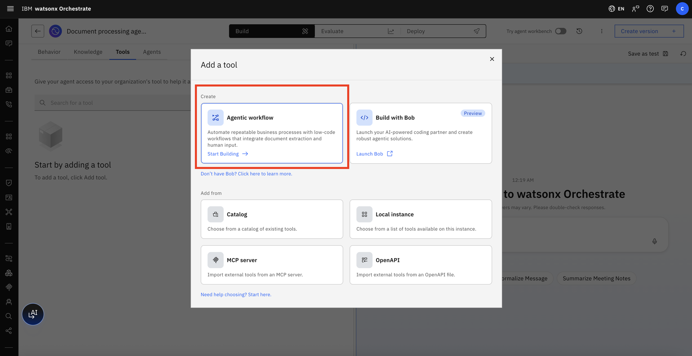
Passo 6 — Dar nome ao workflow
Em Name your agentic workflow, digite Document processing e clique em Start building.
O editor abre com o nó de início (0 inputs), um espaço Add your first step + e o nó de fim.
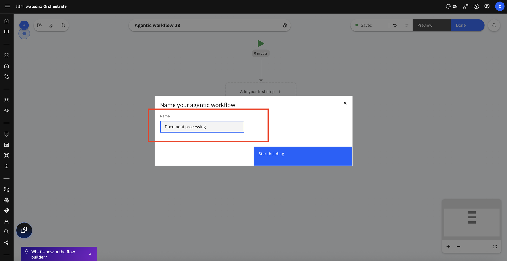
Parte 3 — Definir a saída do workflow
Nota: o workflow não precisa de input, porque o arquivo chega pela conversa, numa user activity. A saída será o tipo do documento identificado pelo classificador.
Passo 7 — Abrir as saídas do nó de fim
Clique no nó de fim (0 outputs). No painel Outputs, clique em Add +.
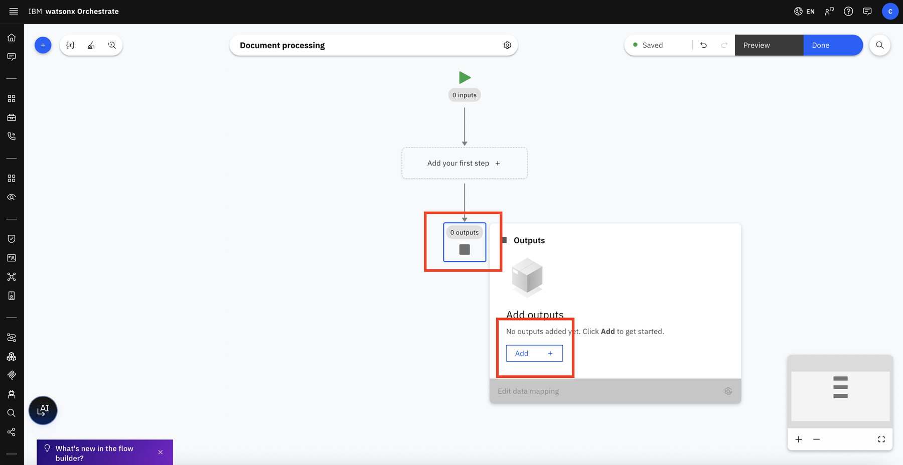
Passo 8 — Escolher o tipo String
Na lista de tipos, escolha String.
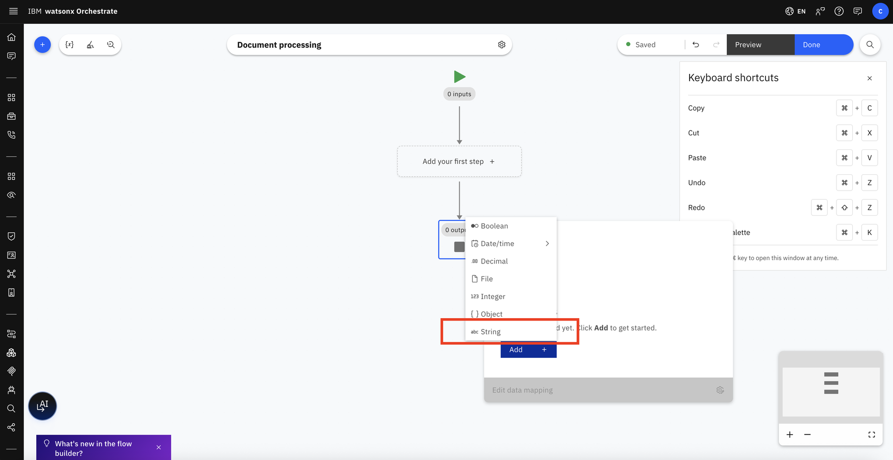
Passo 9 — Nomear a saída
Em Add string output, digite Class_name no campo Name e clique em Add.
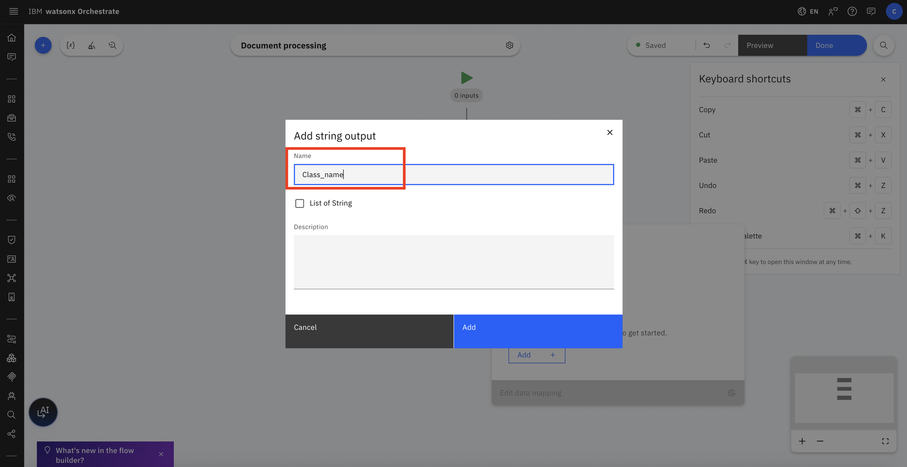
Parte 4 — Receber o documento do usuário
Passo 10 — Adicionar o primeiro passo
O nó de fim agora mostra 1 output. Clique em Add your first step +.
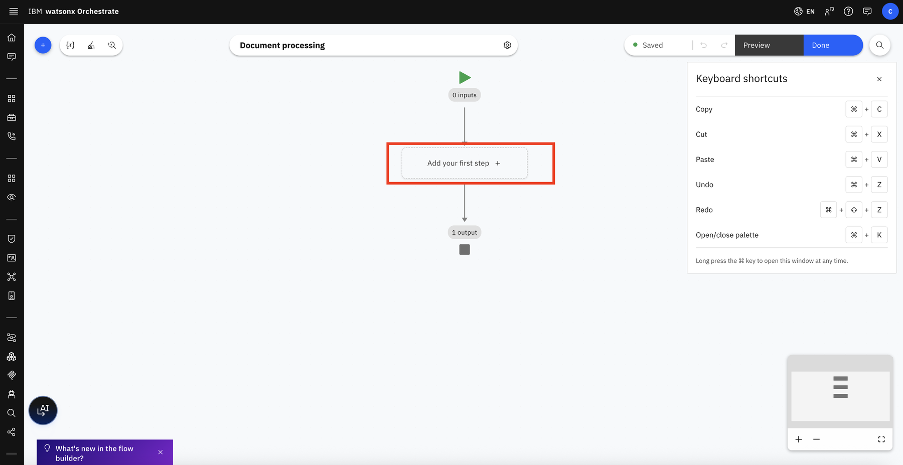
Passo 11 — Conhecer o menu de passos (opcional)
O menu mostra os tipos de passo disponíveis:
- Add a flow activity: classificador, extrator, AI Task e outros nós de processamento.
- Add a flow control: Branch, For each, Loop e Parallel.
- Call a tool e Call an agent: chamam ferramentas e agentes existentes.
- User activities: interações com o usuário no chat (Collect from user para coletar e Present to user para apresentar dados).
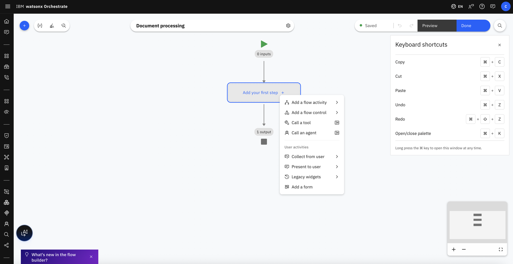
Passo 12 — Nós de processamento de documentos (opcional)
Em Add a flow activity ficam os nós usados neste lab: Document classifier e Document extractor. Não clique agora; primeiro vamos pedir o arquivo ao usuário.
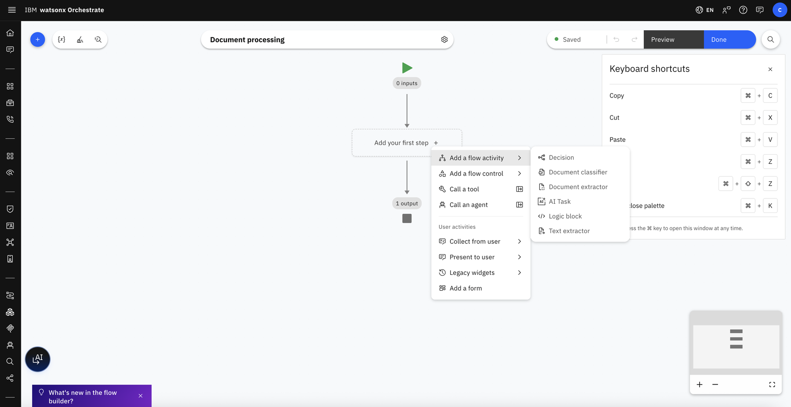
Passo 13 — Adicionar o upload de arquivo
Em User activities, passe o mouse sobre Collect from user e clique em File upload.
Aparece uma caixa verde (User activity 1, atribuída ao Flow initiator) com o passo File upload 1 dentro.
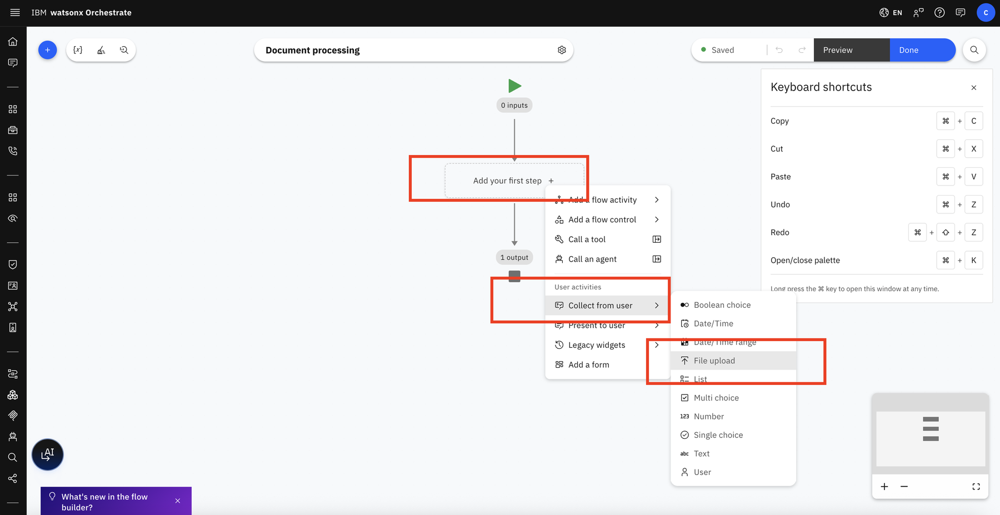
Parte 5 — Classificar o documento
Passo 14 — Adicionar o Document classifier
Clique no + da linha logo depois da caixa verde do File upload. Escolha Add a flow activity e depois Document classifier.
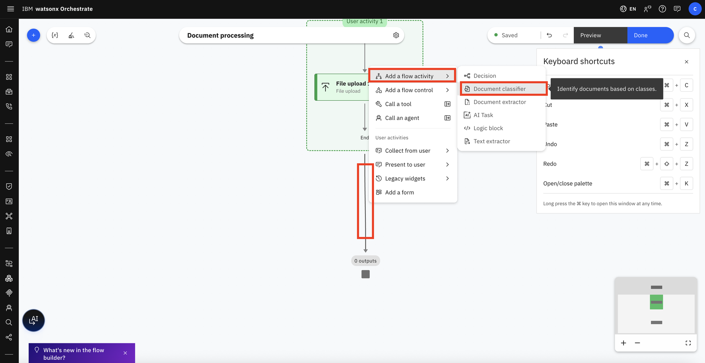
Passo 15 — Criar a classe Contract
- Selecione o nó Document classifier. No painel, ao lado de Classes, clique no lápis (Edit). A tela avisa No custom classes defined yet.
- No painel Classes, a classe Other já existe por padrão; ela recebe os documentos que não se encaixam em nenhuma classe.
- Clique em Add class e digite
Contract.
Repare também em User Review, ligado por padrão: se um documento for classificado como Other, ele é enviado ao flow initiator para revisão.
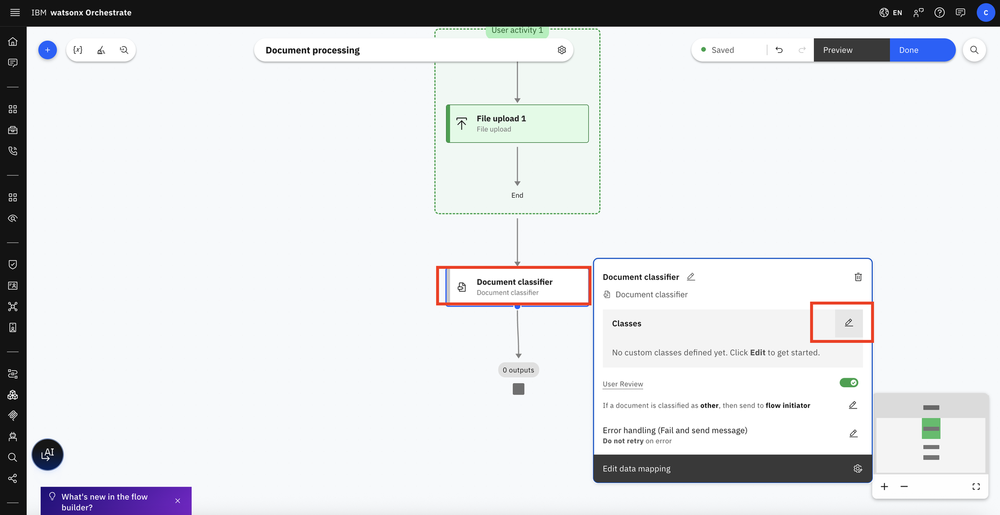
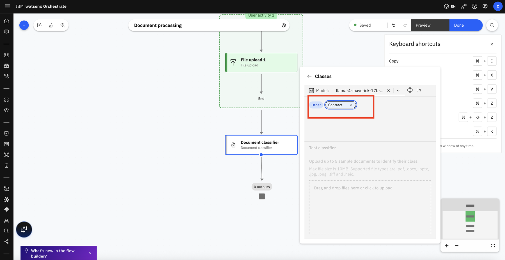
Passo 16 — Criar a classe Invoice e preparar o teste
Clique em Add class de novo e digite Invoice. O painel passa a mostrar Classes (3).
Em Test classifier, clique na área Drag and drop files here or click to upload. É possível enviar até 5 documentos de exemplo, de até 10 MB cada.
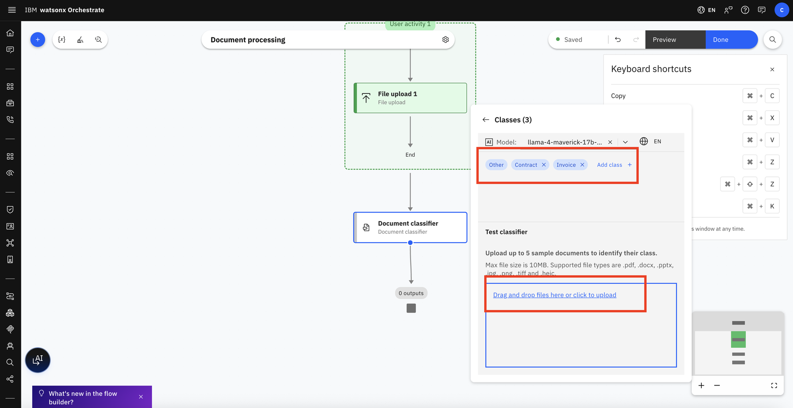
Passo 17 — Conferir a classificação
Envie Contract.pdf e Invoice.pdf. Em Predicted results, confira se cada arquivo recebeu a classe certa: Contract.pdf como Contract e Invoice.pdf como Invoice.
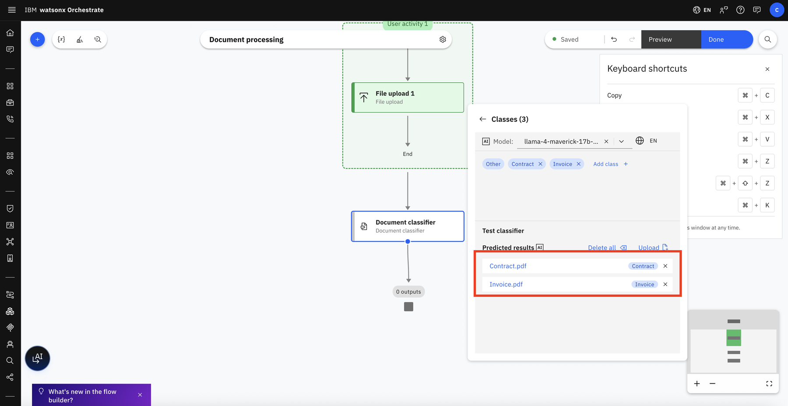
Parte 6 — Rotear pelo tipo de documento
Passo 18 — Adicionar o Branch
Clique no + da linha logo abaixo do Document classifier. Escolha Add a flow control e depois Branch. O branch é criado com dois caminhos (Path 1 e Path 2).
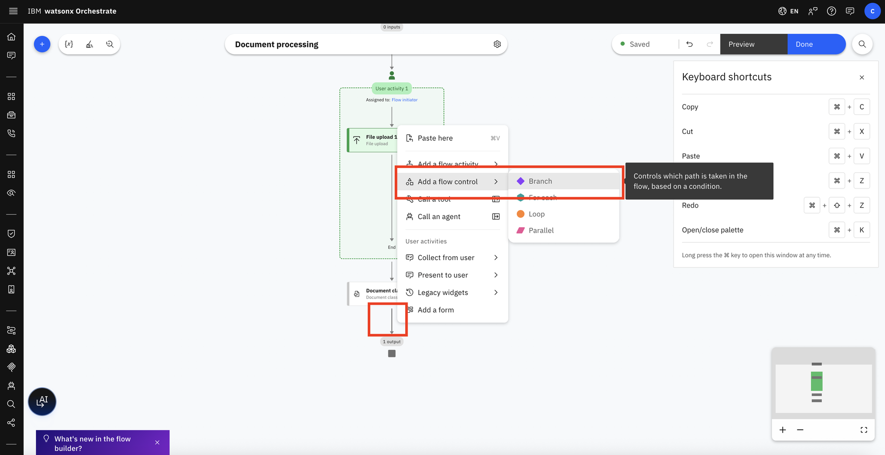
Passo 19 — Condição do caminho Invoice
Clique no nó Branch 1 e abra o Path 1. Monte a condição:
| Campo | Valor |
|---|---|
| Variável | class_name (saída do Document classifier) |
| Operador | == |
| Valor | Invoice |
Renomeie o Path 1 para Invoice pelo lápis ao lado do nome. O Path 2 fica sem condição e recebe os contratos; renomeie-o para Contract. No canvas ele aparece como Contract (default).
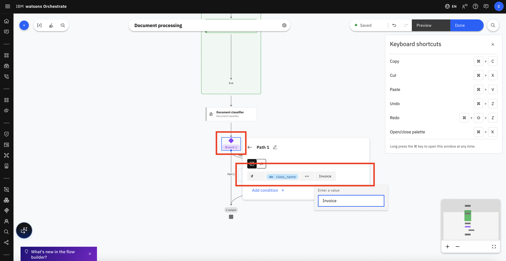
Atenção: a comparação é exata. O valor precisa ser escrito igual ao nome da classe, com o I maiúsculo.
Parte 7 — Extrair os dados da fatura
Passo 20 — Adicionar o Document extractor no caminho Invoice
Clique no + da linha do caminho Invoice. Escolha Add a flow activity e depois Document extractor.
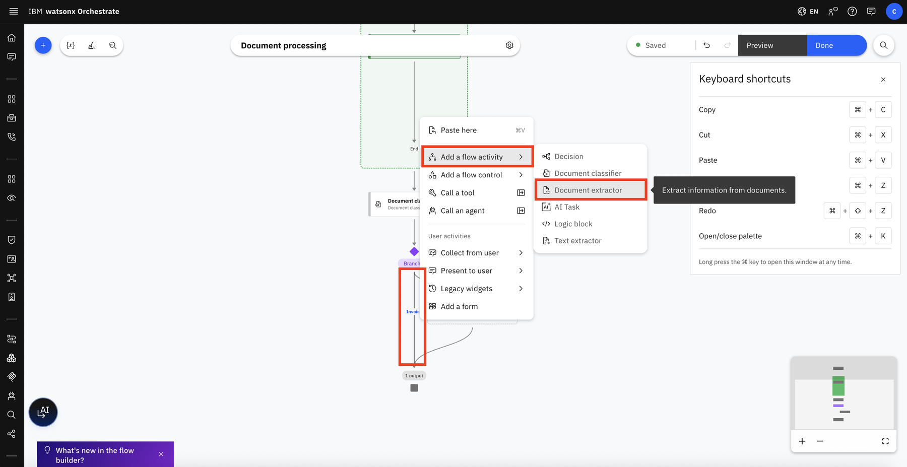
Passo 21 — Escolher o formato Structured para a fatura
Em Select a document format, escolha Structured. Esse formato serve para documentos com layout parecido entre si, como faturas, formulários fiscais e documentos de identidade.
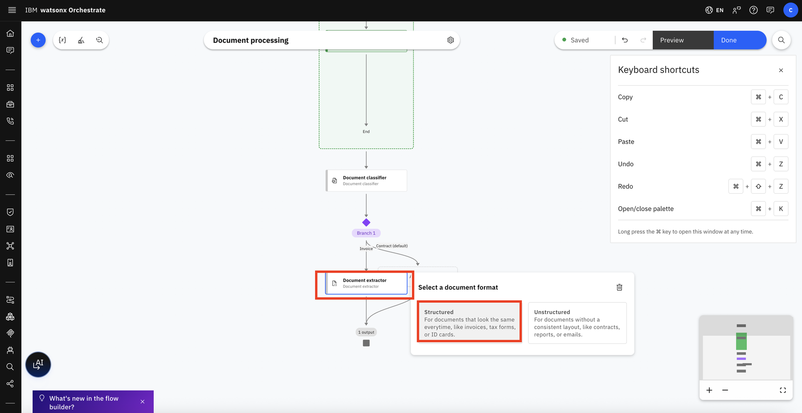
Passo 22 — Abrir a definição do schema
A tela do Document extractor abre com duas opções: Define schema, para escolher os campos, e Upload files, para enviar documentos de exemplo. No canto superior direito ficam o modelo usado (na captura, mistral-small-3-1-24b-instruct-2503) e o idioma.
- Renomeie o extrator: clique no título Document extractor e digite
Invoice extractor. - Clique em Define schema.
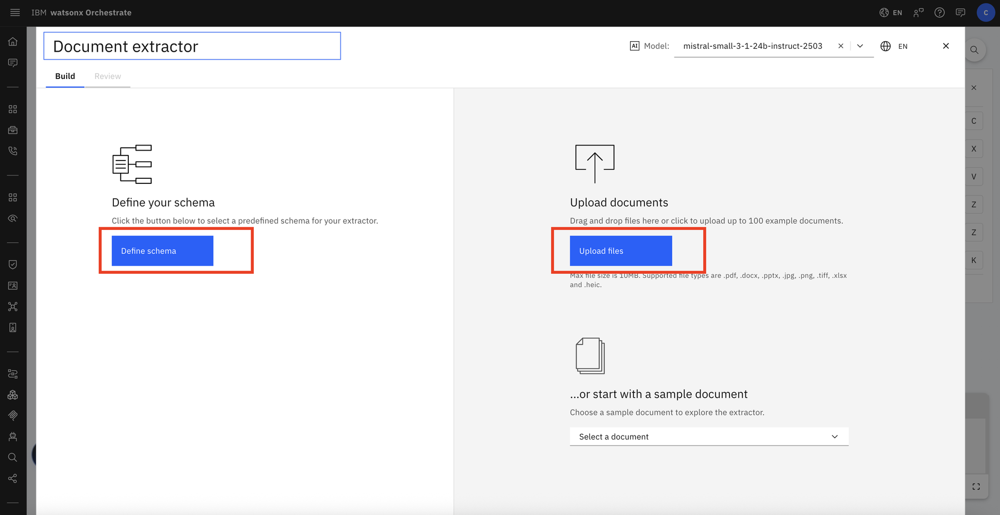
Atenção: nas capturas os dois extratores ficaram com o mesmo nome, Document extractor, o que dificulta escolher as variáveis certas mais adiante. Renomear agora evita esse problema.
Passo 23 — Usar o schema predefinido Invoice
Na lista de schemas predefinidos, selecione Invoice. A tabela à direita mostra os campos que ele já traz, com descrição, tipo e exemplo:
- Invoice date e Invoice id
- Customer name e Customer billing address (equivale ao Bill to)
- Customer email, Customer phone, dados de entrega e Vendor name
Clique em Create.
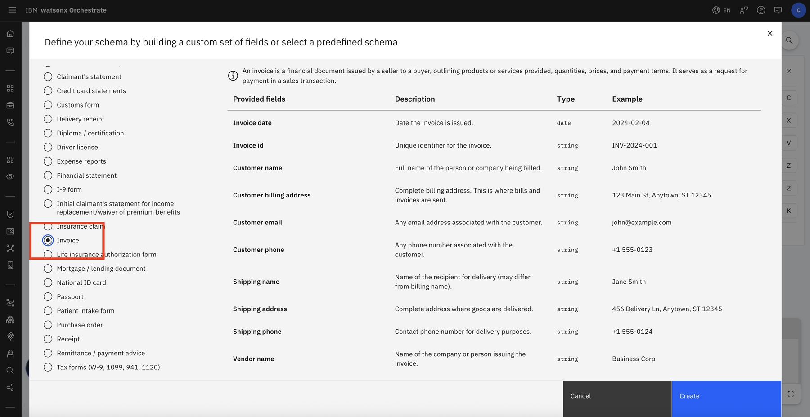
Passo 24 — Enviar a fatura de exemplo
Clique em Upload files e escolha Invoice.pdf. Depois do processamento, confira os valores extraídos de cada campo com a tabela de resultados esperados e clique em Verify document para registrar que estão corretos.
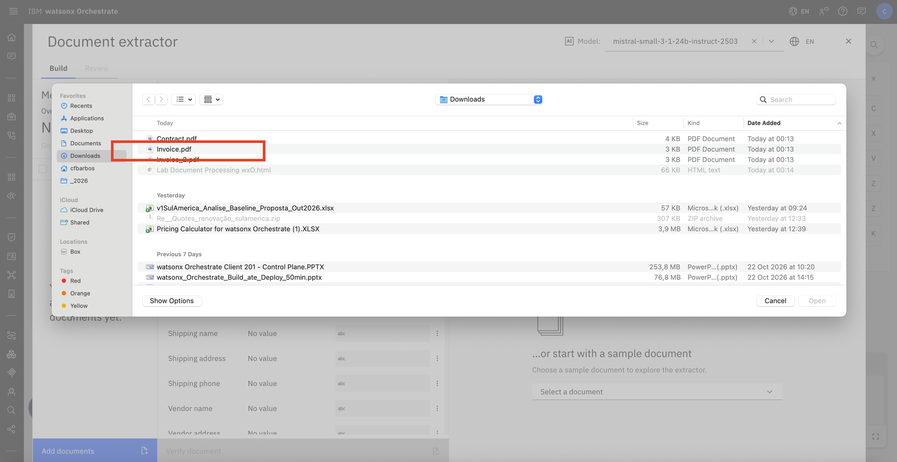
Parte 8 — Extrair os dados do contrato
Passo 25 — Adicionar um passo no caminho Contract
Volte ao canvas. O caminho Contract (default) ainda está vazio. Clique em Add + nesse caminho.
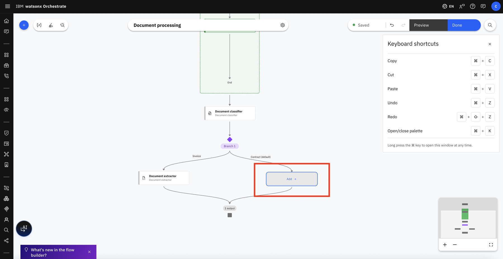
Passo 26 — Escolher Document extractor
Escolha Add a flow activity e depois Document extractor.
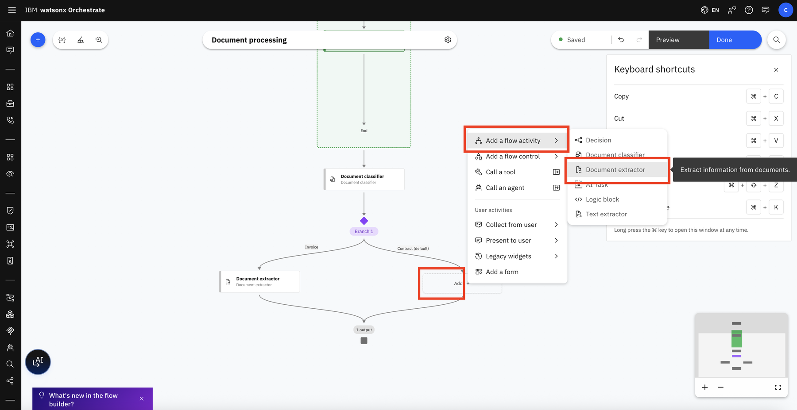
Passo 27 — Escolher o formato Unstructured
Em Select a document format, escolha Unstructured, indicado para documentos sem layout fixo, como contratos, relatórios e e-mails.
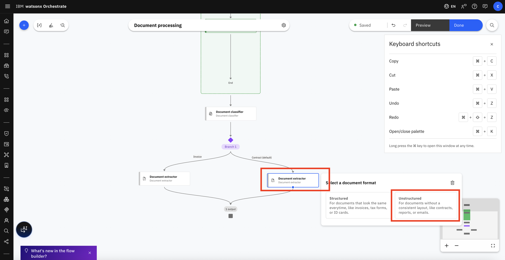
Passo 28 — Enviar o contrato de exemplo
No extrator não estruturado, a esquerda fica vazia até você criar os campos.
- Renomeie o extrator para
Contract extractor(clique no título). - Clique em Upload files e envie
Contract.pdf.
Na captura, o modelo padrão foi llama-4-maverick-17b-128e-instruct.
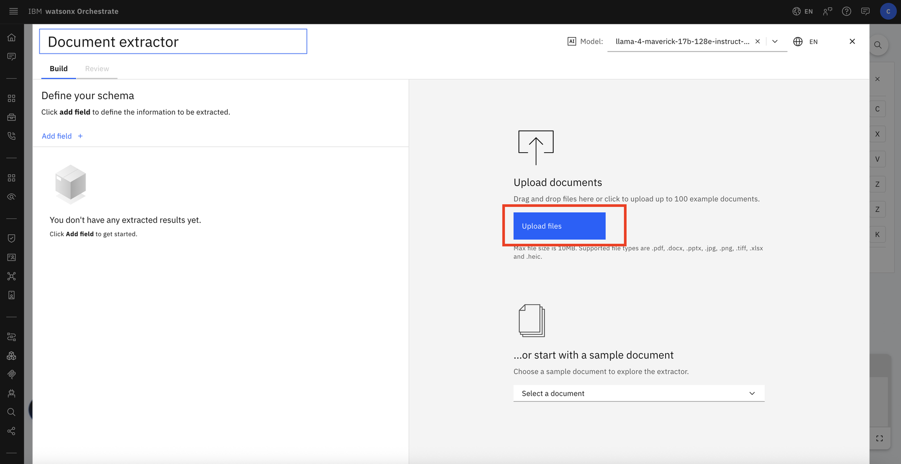
Passo 29 — Criar os campos do contrato
O contrato aparece no visualizador à direita. Em Define your schema, clique em Add field para cada campo que quer extrair.
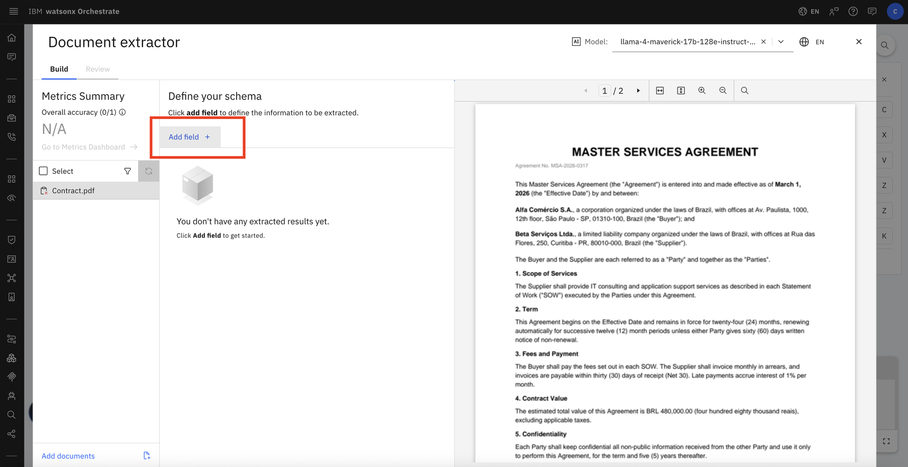
Passo 30 — Conferir e verificar a extração
Crie os campos Buyer e Supplier. Para cada um, a tabela mostra o Extracted Value, encontrado pelo modelo, e o Correct Value, que você pode corrigir:
| Campo | Valor esperado |
|---|---|
| Buyer | Alfa Comércio S.A. |
| Supplier | Beta Serviços Ltda. |
| Effective date (opcional) | March 1, 2026 |
Com os valores conferidos, clique em Verify document. O documento deixa de ser Unverified e entra na métrica de acurácia (Metrics Summary).
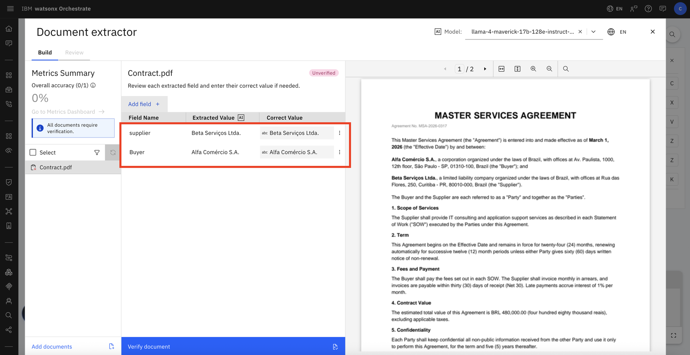
Atenção: padronize a grafia dos campos (por exemplo,
BuyereSupplier). O nome do campo vira o nome da variável que você vai usar nas mensagens; no seletor de variáveis ele aparece em minúsculas (buyer,supplier).
Parte 9 — Mostrar o resultado ao usuário
Passo 31 — Adicionar uma mensagem no caminho Invoice
Clique no + da linha logo abaixo do extrator do caminho Invoice. Escolha Present to user e depois Message. É criada uma nova user activity (User activity 2) com o passo Message 1.
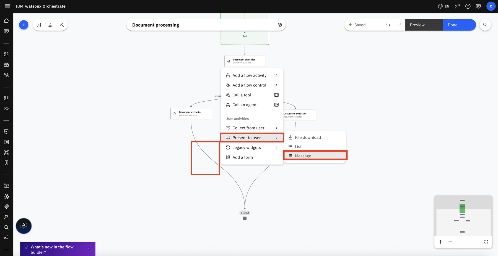
Passo 32 — Abrir o editor da mensagem
Selecione Message 1. No painel, em Agent message, fica o texto que o agente mostra no chat. Clique no ícone {x} para inserir variáveis.
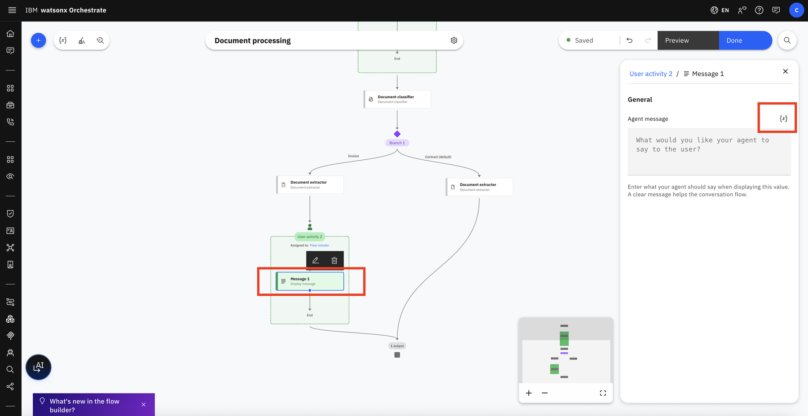
Passo 33 — Escolher as variáveis da fatura
No seletor de variáveis, clique no extrator da fatura (Invoice extractor; na captura, Document ex...) e escolha os campos que quer mostrar. Aqui foram usados invoice_id e invoice_date. O mesmo seletor também mostra campos como due_date, iban e line_items.
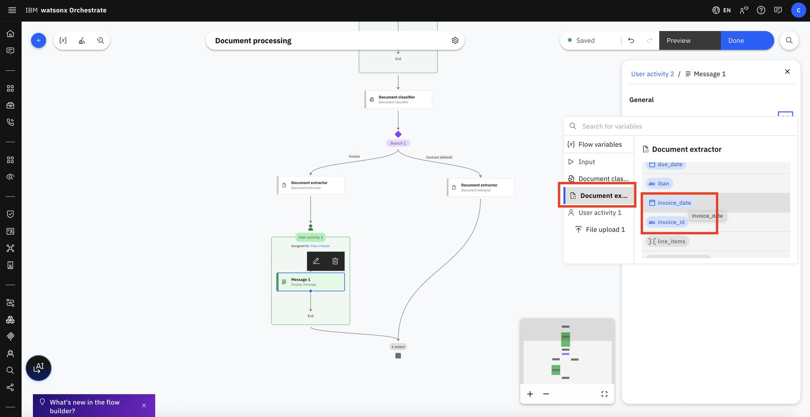
Passo 34 — Mensagem da fatura pronta
As variáveis aparecem como etiquetas dentro de Agent message.
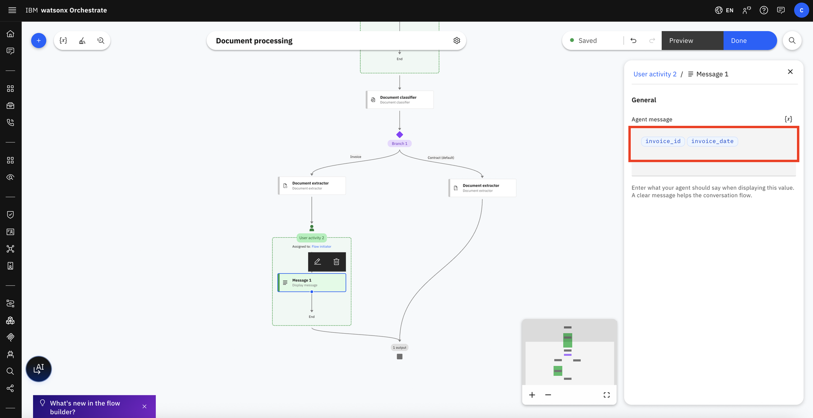
Dica: escreva um texto em volta das variáveis para a resposta ficar legível, por exemplo: Fatura
invoice_idemitida eminvoice_date, cobrada decustomer_name.
Passo 35 — Adicionar uma mensagem no caminho Contract
Repita no caminho Contract: clique no + abaixo do extrator do contrato, escolha Present to user e depois Message.
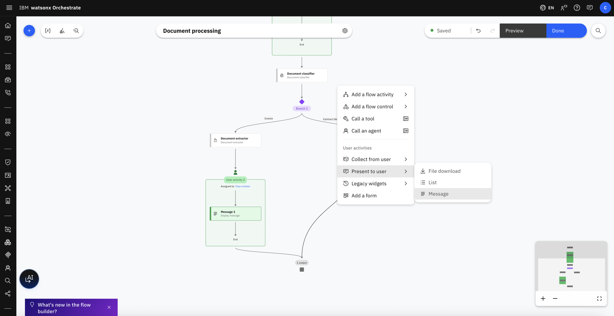
Passo 36 — Abrir o editor da segunda mensagem
É criada a User activity 3 com o passo Message 2. Selecione Message 2 e clique em {x} em Agent message.
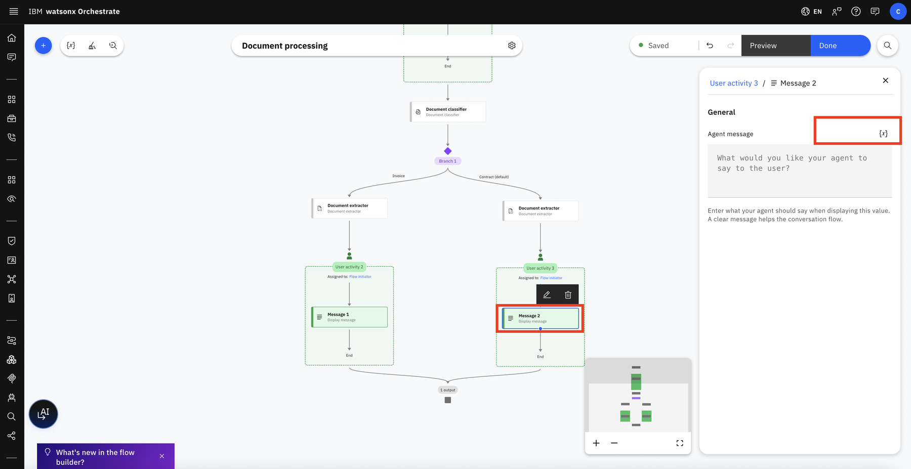
Passo 37 — Escolher as variáveis do contrato
Clique no extrator do contrato e escolha buyer e supplier.
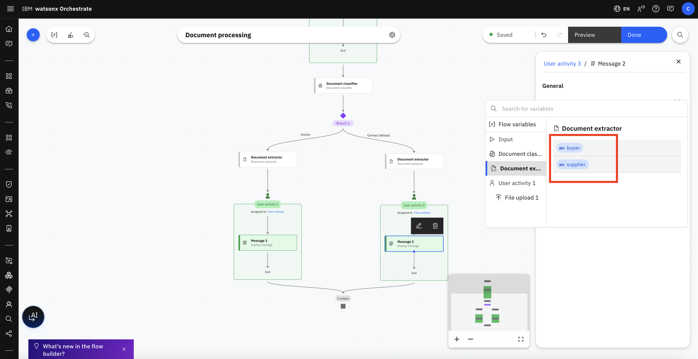
Passo 38 — Mensagem do contrato pronta
As variáveis buyer e supplier aparecem em Agent message.
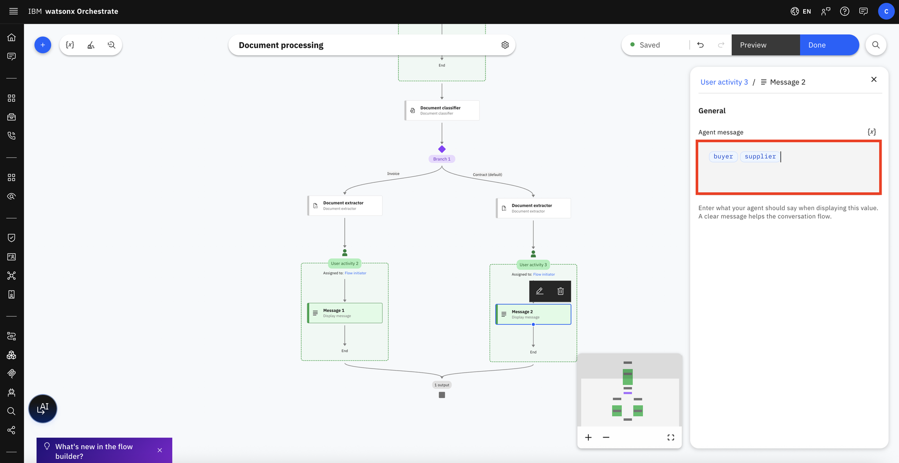
Dica: por exemplo, Contrato entre
buyer(comprador) esupplier(fornecedor).
Parte 10 — Salvar o workflow
Passo 39 — Conferir o fluxo e clicar em Done
O fluxo completo fica assim: upload do arquivo, Document classifier, Branch e, em cada caminho, um extrator seguido de uma mensagem. Os dois caminhos terminam no nó de fim (1 output).
- Antes de salvar, ligue a saída: clique em 1 output no nó de fim, depois em Edit data mapping, e escolha Document classifier › class_name para a saída
Class_name. - Clique em Done para salvar o workflow e voltar ao agente.
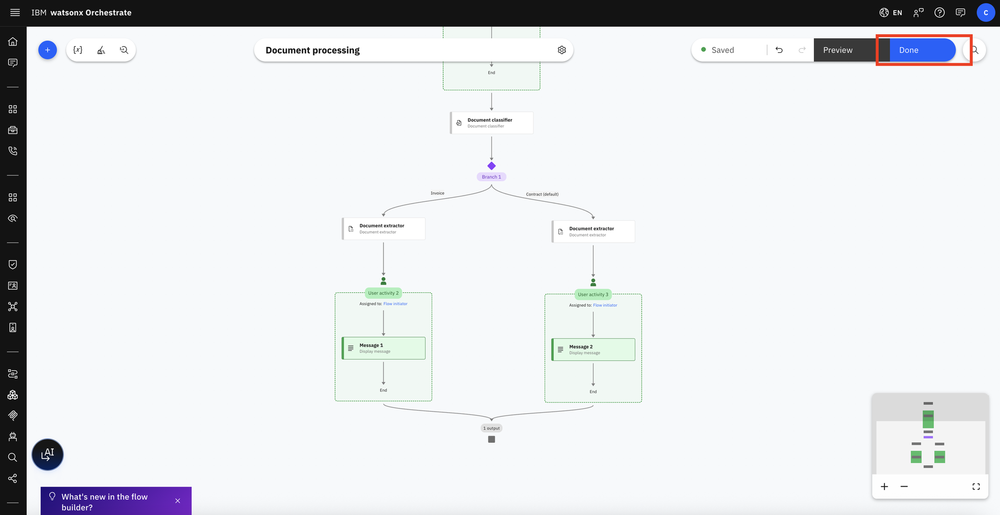
Atenção: sem o mapeamento do passo 1, o workflow termina sem devolver o tipo do documento.
Passo 40 — De volta ao agente
O editor fecha e o workflow Document processing aparece na aba Tools do agente, com o tipo Agentic Workflow. O próximo passo é preencher o campo Instructions na aba Behavior.
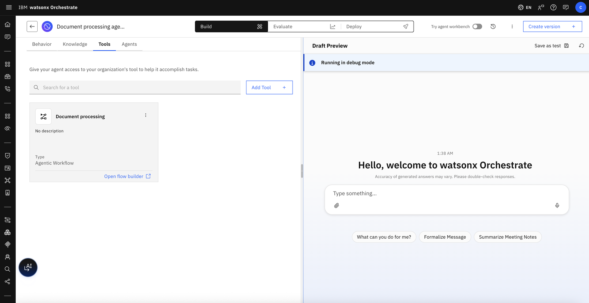
Dica: o card mostra No description. Uma descrição curta do workflow (por exemplo, Classifies a document as contract or invoice and extracts its core fields) ajuda o agente a escolher a ferramenta certa. Abra o workflow pelo Open flow builder e procure a descrição nas configurações (ícone de engrenagem ao lado do nome do workflow).
Parte 11 — Instruir e testar o agente
Passo 41 — Escrever a instrução do agente
Na aba Behavior, confira a Description do agente e preencha Instructions com:
Invoke the Document processing tool and output the result
A instrução cita o nome exato do workflow (Document processing). Isso ajuda o agente a escolher a ferramenta certa.
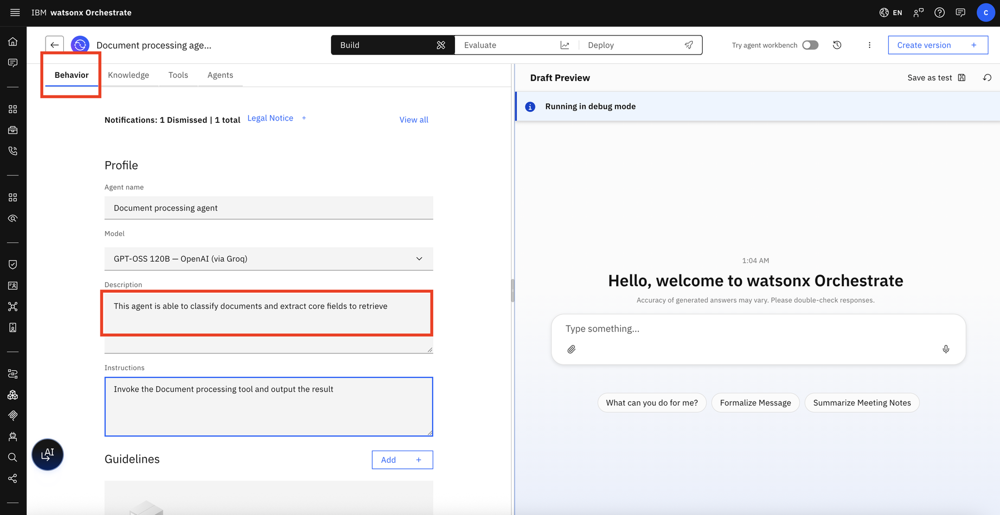
Passo 42 — Iniciar o teste no Draft Preview
No Draft Preview, digite um pedido como Quero usar o document processing e clique no botão de enviar.
O agente entende pedidos em português. Não é preciso usar uma frase fixa.
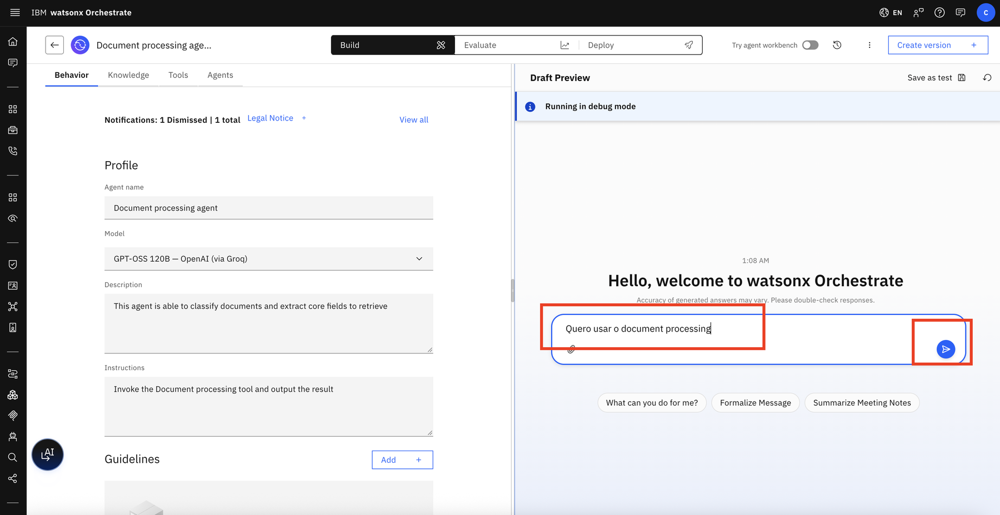
Passo 43 — O workflow pede o arquivo
O agente chama o workflow, que começa pela user activity File upload 1. Clique em Upload document.
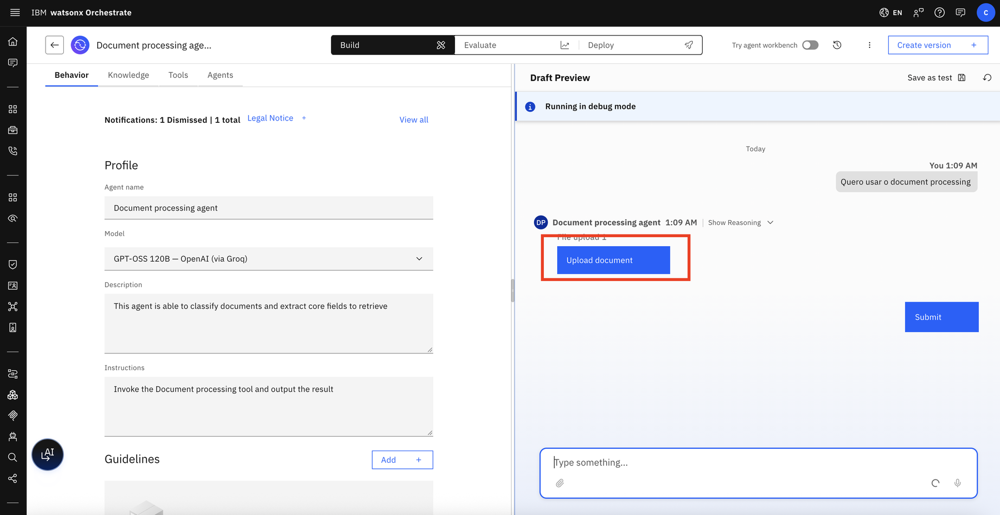
Passo 44 — Enviar a fatura
Escolha Invoice.pdf. O arquivo aparece abaixo do botão. Clique em Submit.
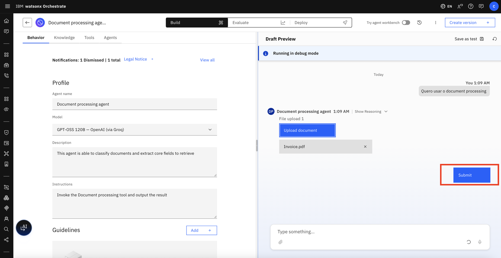
Passo 45 — Revisar a extração
Depois de classificar e extrair, o agente responde I'll need you to review the document extraction e mostra o cartão Review document extraction do Invoice.pdf.
Clique em View, confira os valores extraídos, corrija o que estiver errado e confirme. O fluxo então continua pelo caminho Invoice e mostra a mensagem com invoice_id e invoice_date.
Essa revisão é o human-in-the-loop do extrator. Verificar mais documentos de exemplo no extrator melhora a acurácia.
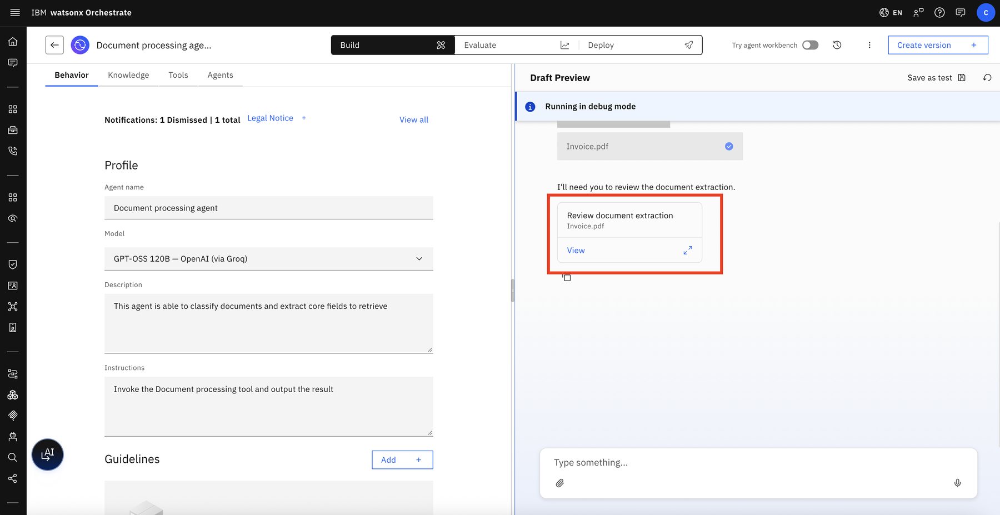
Conclusão e próximos testes
Pronto: o agente recebe um documento no chat, identifica o tipo, extrai os campos principais e devolve o resultado. Para validar o lab por completo:
| # | Teste | O que conferir |
|---|---|---|
| 1 | Repetir o teste com Contract.pdf |
O fluxo segue pelo caminho Contract e mostra Buyer e Supplier com os valores esperados |
| 2 | Testar com Invoice_2.pdf (opcional) |
A extração funciona numa fatura de outro fornecedor e layout, que o extrator nunca viu |
| 3 | Abrir o workflow e conferir o nó de fim | Class_name mapeado para Document classifier › class_name |
Quando os testes passarem, clique em Deploy e confirme a publicação do agente.
Ponto principal para a turma: o agente conversa e decide; o agentic workflow garante os passos de negócio na ordem certa, com classificação, extração e revisão humana quando necessário.
Problemas comuns e checklist
| Sintoma | Causa provável | Como resolver |
|---|---|---|
| O agente responde, mas não chama o workflow | Instruction genérica ou workflow sem descrição | Cite o nome exato da ferramenta nas Instructions e dê uma descrição ao workflow |
| Toda fatura cai no caminho Contract | Valor da condição do Branch diferente do nome da classe | Use exatamente Invoice, com o I maiúsculo |
| Um campo vem vazio ou incompleto | Modelo, nome ou descrição do campo pouco claros | Teste outro modelo no extrator, ajuste o nome ou a descrição do campo ou envie mais documentos de exemplo |
| A mensagem mostra a variável errada | Os dois extratores com o mesmo nome | Renomeie para Invoice extractor e Contract extractor e insira as variáveis de novo pelo {x} |
| A revisão aparece em todo documento | Poucos documentos verificados no extrator | Verifique mais documentos de exemplo no extrator para aumentar a acurácia |
| O workflow termina sem devolver o tipo | Saída Class_name sem mapeamento |
No nó de fim, Edit data mapping → Document classifier › class_name |
Checklist do aluno